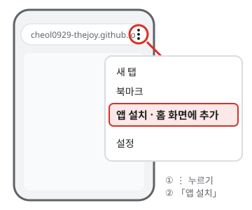
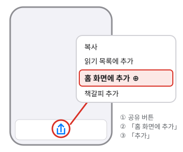

← 묵상으로
설정
사용 안내
- 아이콘 누르기 — 위쪽 SAEBOM 아이콘을 누르면 어느 화면에서든 오늘 묵상(홈)으로 돌아갑니다.
- 배속 — 0.9배부터 1.75배까지 고를 수 있고, 마지막에 고른 배속을 기억합니다. 보통(1.0) 속도는 듣기 편하게 조금 빠르게 맞춘 음성입니다.
- 음성 — 담임목사·남성·여성 중 고를 수 있습니다. 그날 준비된 음성만 누를 수 있습니다.
- 글자 작게·크게 — 위쪽 「글자 작게」「글자 크게」로 글씨 크기를 바꿉니다.
- 밝게·어둡게 — 이 설정 화면의 「화면」에서 고릅니다.
- 날짜 넘기기 — 묵상 화면을 옆으로 밀면 앞뒤 날짜로 넘어갑니다.
화면
이 휴대폰에서만 기억합니다. 처음에는 묵상 페이지처럼 어둡게 보입니다.
홈 화면에 추가
이미 홈 화면에서 앱으로 열려 있습니다.
안드로이드 (크롬)
- 오른쪽 위 ⋮(점 세 개)를 누릅니다.
- 「앱 설치」 또는 「홈 화면에 추가」를 누릅니다.
- 「설치」를 누르면 홈 화면에 새봄묵상 아이콘이 생깁니다.

아이폰 (사파리)
- 화면 아래 공유 버튼(네모에 위쪽 화살표)을 누릅니다.
- 목록을 올려 「홈 화면에 추가」를 누릅니다.
- 오른쪽 위 「추가」를 누르면 홈 화면에 아이콘이 생깁니다.

알림
휴대폰 알림(푸시)은 아직 제공하지 않습니다. 무료로 안정되게 보낼 방법이 없어서입니다.
대신 휴대폰 달력에 「매일 오전 5시 새봄묵상」 일정을 넣으면, 달력이 매일 아침 알려 줍니다. 새 묵상은 오전 5시에 열립니다.
달력에 매일 오전 5시 알림 넣기
파일을 열면 달력 앱이 「추가」를 묻습니다. 알림을 끄려면 달력에서 이 일정을 지우면 됩니다.
카카오톡: 자동 알림 메시지는 비용이 들어 보내지 않습니다. 묵상 화면 아래 「카카오톡으로 보내기」로 가족·이웃에게 오늘 묵상을 보낼 수 있습니다.
앱 정보
- 버전
- v1-0000000000
- 묵상
- -
- 성경
- 개역개정
- 문의
- 새봄교회
아이콘이 예전 그림이면 홈 화면 아이콘을 지우고 다시 추가해 주세요